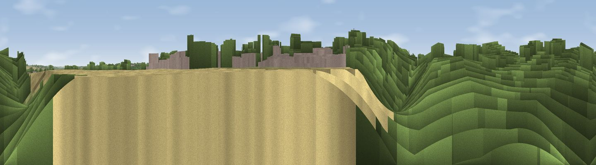

The Dragline View Point
#43412 in England · top 78% of its area beats it · near IrchesterWhere it is
The exact computed spot (SP 91881 65849). Click the marker for map links.
The view, rendered

A 360° render of this exact spot computed from the terrain model, tree cover and land cover — summer colours, afternoon light, calibrated against photographs of famous viewpoints. Real trees, hedges and buildings will differ in detail.
The panorama
Grey silhouette: terrain skyline in each direction (720 bearings, Earth curvature and refraction included). Dashed green: skyline with trees (+15 m) and buildings (+8 m) as obstacles. Blue strip: how far the ground is visible on each bearing.
Where the view opens
Wedge length = distance to the farthest visible ground on that bearing (vegetation-aware). Rings at 10, 25 and 50 km.
What fills the view
63% cropland · 37% woodland
Angular shares of the visible panorama (visual magnitude), not map area. Landscape diversity 0.29 (0–1 Shannon).
Key numbers
More beautiful places nearby
The staircase of upgrades: each row has a higher view potential than everything closer. Driving times are estimates from straight-line distance, calibrated against real road routing — check an actual route before setting out.
| Place | Direction | Drive | Score |
|---|---|---|---|
| Viewpoint near Finedon | N · 5 km | ~10 min | 44.8 |
| Viewpoint near Haselbech | WNW · 24 km | ~39 min | 46.2 |
| Viewpoint near Rockingham | N · 26 km | ~42 min | 48.7 |
| Viewpoint near Cold Ashby | WNW · 30 km | ~47 min | 61.7 |
| Big Hill - Staverton Clump | W · 37 km | ~56 min | 68.4 |
| Beacon Hill | S · 49 km | ~70 min | 74.1 |
| Viewpoint near Halton | S · 56 km | ~78 min | 74.3 |
| Coombe Hill Monument | S · 59 km | ~82 min | 75.5 |
52.28311, -0.65452 · source: osm viewpoint · position refined by local search. Computed location — check access rights before visiting.